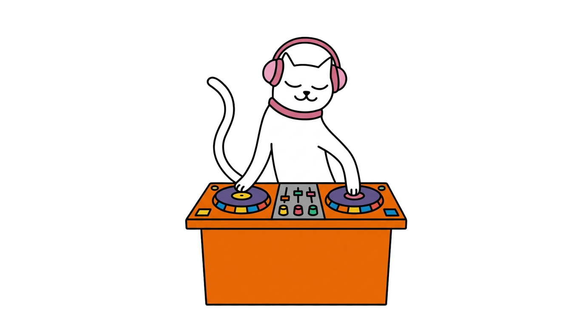

Four records
on repeat
on repeat


CCD / Friday Fresh / 06.11
1/4

Nikki Nair
Majestic Animals EP
Breaks and electro with wonky, heavy bass
Friday Fresh★New music★Friday Fresh★New music★
2/4

Sijya
Leather & Brass [Retrofitted]
Remixes by Jlin and Rachika Nayar
Friday Fresh★New music★Friday Fresh★New music★
3/4

Eerie Enterprise
Places Remember Events
Their debut album, on Dekmantel
Friday Fresh★New music★Friday Fresh★New music★
4/4

OR
Music For Empty Stadiums
John Talabot as OR
Friday Fresh★New music★Friday Fresh★New music★
Which one
first?
first?
Reply 1 to 4

Friday Fresh★New music★Friday Fresh★New music★